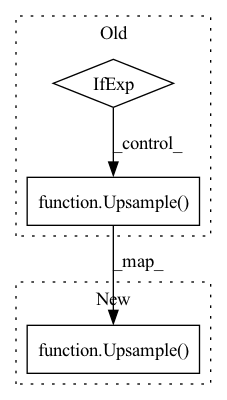

Pattern ID :1859

Before Change
if use_attn:
ups.append(SelfAttention(channel_mult))
pre_channel = channel_mult
ups.append(Upsample(pre_channel)
if not is_last else nn.Identity())
self.ups = nn.ModuleList(ups)
self.final_conv = Block(pre_channel, default(out_channel, in_channel))
After Change
pre_channel+feat_channels.pop(), channel_mult, time_emb_dim=time_dim, dropout=dropout, with_attn=use_attn))
pre_channel = channel_mult
if not is_last:
ups.append(Upsample(pre_channel))
now_res = now_res*2
self.ups = nn.ModuleList(ups)
In pattern: SUPERPATTERN
Frequency: 3
Non-data size: 3
Instances
Fragment ID: 3384576
Project Name: janspiry/image-super-resolution-via-iterative-refinement
Commit Name: ec021fdcb317782f6fffb553866d788504e96889
Time: 2021-07-30
Author: lw_jiang@foxmail.com
File Name: model/unet.py
Class Name: UNet
Method Name: __init__
Parent Class: nn.Module
Fragment ID: 3384575
Project Name: lucidrains/denoising-diffusion-pytorch
Commit Name: 54557120880bb9adbea9f93a29a2c432b67991c1
Time: 2023-02-01
Author: lucidrains@gmail.com
File Name: denoising_diffusion_pytorch/simple_diffusion.py
Class Name: UViT
Method Name: __init__
Parent Class: nn.Module
Fragment ID: 3384574
Project Name: janspiry/image-super-resolution-via-iterative-refinement
Commit Name: fc24c7b6bc55aaf8950b4a581247c844f5fe3ba9
Time: 2021-07-30
Author: jiangliangwei@tetras.com
File Name: model/unet.py
Class Name: UNet
Method Name: __init__
Parent Class: nn.Module